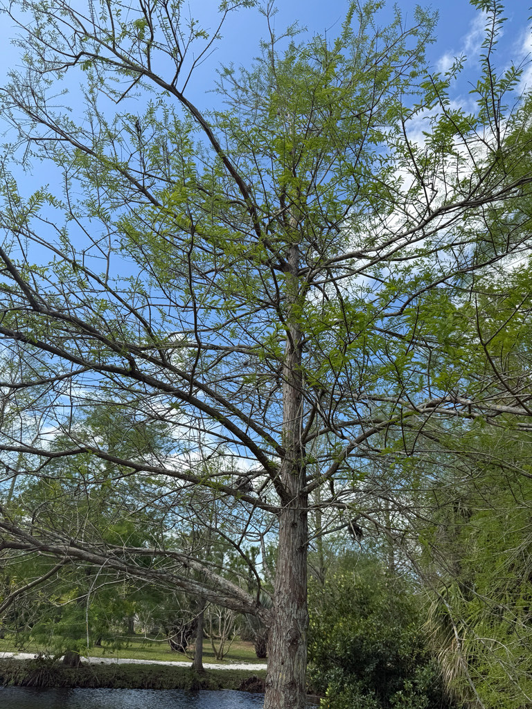

- The oldest known Bald Cypress — and the oldest living tree in eastern North America — is 2,624 years old, growing along the Black River in North Carolina.
- Despite looking like an evergreen conifer all summer, it drops every needle in fall — one of only a handful of deciduous conifers in the world.
- The knees are scientifically debated: most likely pneumatophores helping roots breathe in oxygen-depleted swamp soil, but the USDA notes no single function is definitively proven.
- The cypress pond here receives fresh water from the county system — conditions close to this tree's natural habitat.
Native to the southeastern and Gulf Coastal Plains of the United States, from southern Delaware south through Florida and west along the Gulf Coast to Texas. One of Florida's most iconic native trees, found naturally in swamps, pond edges, river margins, and seasonally flooded forests throughout the state.
- Bald Cypress wood was the timber of choice for anything built in or near water. Its heartwood is extraordinarily rot-resistant — specimens have been recovered from riverbeds after centuries submerged, still sound enough to use. It built boats, bridges, water tanks, and the foundations of buildings across the Gulf South. New Orleans was substantially framed with it.
- The oldest known individual — 2,624 years old in North Carolina — predates the Roman Empire. Scientists core these ancient trees to reconstruct centuries of rainfall and drought patterns across the southeastern US. The rings are a climate archive going back thousands of years.
- The cypress introduced to England in 1640 by plant collector John Tradescant the Younger — Charles I's head gardener — is still the same species growing beside the pond here. It was among the first New World trees seen by European eyes.
- The knobby knees have fascinated people for centuries. The most accepted explanation is that they help the roots breathe in low-oxygen swamp water — but knees also appear on dry-site specimens, and the USDA has noted no function has been definitively proven. The tree grows them anyway.
The Bald Cypress is one of Florida's most productive native wildlife trees, and the specimen beside Palma Sola's pond is doing real ecological work. Its small round cones feed Wood Ducks, wild turkeys, Evening Grosbeaks, and squirrels. The tall crown is a documented nesting platform for Bald Eagles and Ospreys.
The submerged roots and emergent knees create critical aquatic habitat for fish, frogs, turtles, and invertebrates. The feathery deciduous foliage supports caterpillars of several moth species, and as a keystone native, its overall structure makes it the ecological anchor of the park's pond edge.
drops its feathery needle-like leaves in fall, turning a warm russet-red before doing so. One of the few Florida natives with a genuine fall color display. Bare in winter; leafs out again in spring.
Inconspicuous, appearing February through April before new leaves unfold.
Small, round, about 1 inch in diameter. Seeds eaten by Wood Ducks, wild turkeys, and squirrels.
Grayish-brown to reddish-brown, thin and fibrous with a stringy texture and a vertically interwoven pattern of shallow ridges. Exfoliates in reddish-brown strips on younger trees.
Woody, knobby projections rising from the roots around pond-grown specimens. Can extend a foot or more above the waterline. Not produced — or smaller — on dry-site trees.
Dramatically flared and buttressed on mature trees, narrowing upward.
In fall, the feathery foliage turns warm russet-red — one of the park's best color moments, especially reflected in the pond water. In winter, the bare silhouette and prominent knees rising from the water are unmistakable. Watch the crown for Osprey activity.
This isn't a food plant, but its seeds are a critical wildlife food for wood ducks, wild turkeys, grosbeaks, and squirrels.
It's not known to be toxic to people or animals.
- © Cole Guyton (CC-BY-NC), via iNaturalist